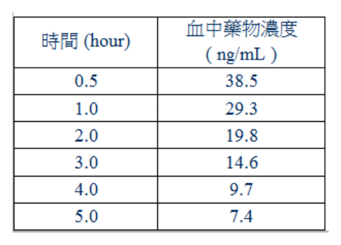
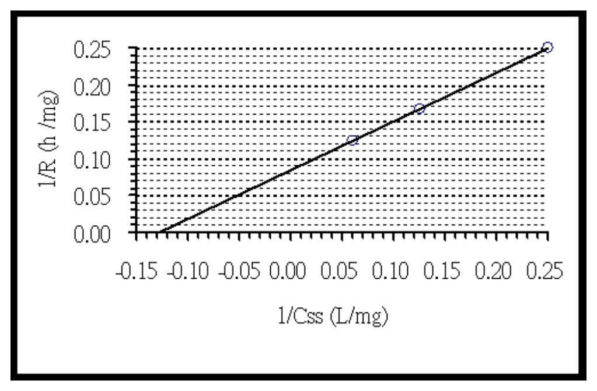

開卷有益 ／
藥師 ／ 藥劑學與生物藥劑學 ／ 106 年第 1 次106 年第 1 次藥師藥劑學與生物藥劑學試題與答案
這一頁是民國 106 年第 1 次藥師藥劑學與生物藥劑學的整份歷屆試題，共 80 題，題目與標準答案出自考選部「國家考試試題及測驗式試題答案」開放資料，其中 78 題附有詳解。以下逐題列出題幹、選項與答案；要計時作答或記錄成績，請用線上練習。
考選部原始場次代碼：106020
線上作答這一科 →
全部 80 題
第 1 題
一藥物（100 mg/mL）以零階次動力學降解，其反應速率常數為0.2 mg/mL/h，其半衰期為多少小時？
（A） 10（B） 250（C） 500（D） 1,000答案：（B）
詳解與考點 正解：本題為零階次降解，濃度隨時間以固定量下降，故用 t½ = C0/(2k0)。先求半濃度：100 mg/mL ÷ 2 = 50 mg/mL；需降解的濃度為 100 mg/mL - 50 mg/mL = 50 mg/mL。代入 t½ = 50 mg/mL ÷ 0.2 mg/mL/h = 250 h，故選 B。
A：10 h 時的濃度下降量為 0.2 mg/mL/h × 10 h = 2 mg/mL，剩餘 98 mg/mL，遠未達半濃度。
C：500 h 等於 C0/k0 = 100 mg/mL ÷ 0.2 mg/mL/h，是理論上降至零濃度所需時間，不是半衰期。
D：1,000 h 已超過（C）所示的零濃度時間；零階次模型不能在濃度降為零後持續外推。
本題考點：零階次降解（zero-order degradation）——濃度以固定量遞減時，用 t½ = C0/(2k0)；半衰期與濃度（half-life dependence）——零階次的 t½ 隨初始濃度改變，不能套用一階次的固定半衰期概念。
第 2 題
下列那一項資料在新藥申請（NDA）是必備的，但在簡易新藥申請（ANDA）不需提供？
（A） 藥品的化學製造（B） 生體可用率／生體相等性（C） 藥品之品管（D） 臨床試驗答案：（D）
詳解與考點 正解：本題比較 NDA 與 ANDA 的資料核心。（D）臨床試驗資料是新藥申請用以建立安全性與療效的必要證據；簡易新藥申請通常以參考藥品既有證據為基礎，重點在證明等同性，故選 D。
A：藥品的化學製造資料關係到成分、製程與規格控制，NDA 與 ANDA 都須提供，不能作為兩者的差異。
B：生體可用率／生體相等性資料是 ANDA 的核心資料，也能支持 NDA 的藥動學評估，因此不是 ANDA 不需提供的項目。
C：藥品品質管制用以確保每批產品符合規格，無論新藥或學名藥申請都不可省略。
本題考點：新藥申請（New Drug Application；NDA）——需要以非臨床與臨床證據建立新產品的安全性與療效；簡易新藥申請（Abbreviated New Drug Application；ANDA）——以藥學品質與生體相等性證明可替代性，不重複建立參考藥品已具備的臨床證據。
第 3 題
有關流浸膏的敘述，下列何者錯誤？
（A） 流浸膏為生藥以適當浸溶劑抽提，所製得之一種含乙醇液體製劑。每mL所含之有效成分，相當於標準生藥1 g（B） 法定之流浸膏，多以浸漬法製備之，其使用之浸溶劑，則照中華藥典第七版正文之個別規定（C） 流浸膏製備時所稱的「中速率」，係指每分鐘流出之滲出液為1～3 mL而言（D） 流浸膏貯置相當時間後，常有沉澱發生，可予過濾，或將澄明部分傾出，再調整其濃度使符合規定標準答案：（B）
詳解與考點 正解：本題要求找出流浸膏的錯誤敘述，判準是主要製備法。（B）稱法定流浸膏多以浸漬法製備不正確；依題目所據規格，流浸膏通常以滲漉法取得連續浸出液，故選 B。
A：流浸膏是以適當浸溶劑從生藥抽提出的含乙醇液體製劑；每 mL 相當於標準生藥 1 g 是其濃度規格的表述。
C：題目所述中速率以每分鐘流出 1-3 mL 滲出液界定，此敘述符合該製備操作的流速分類。
D：流浸膏久置可因成分溶解度改變而出現沉澱，過濾或傾出澄明液後再調整濃度，能使製劑回到規定強度。
本題考點：流浸膏（fluidextract）——判斷製法時區分滲漉法的連續流出與浸漬法的靜置浸出；濃度規格（drug-extract ratio）——每 mL 相當於多少生藥是濃度判讀基準，處理沉澱後仍須重新調整至規格。
第 4 題
有關糖漿劑的敘述，下列何者正確？
（A） 蔗糖的水解反應在鹼性環境特別容易發生（B） 單糖漿最高能和20%乙醇混合不會產生結晶（C） 當果膠和蔗糖溶液混合後會產生膠化（gelation）現象，主要是因為蔗糖造成果膠的脫水現象（D） 根據中華藥典第七版規定，糖漿應該滿置於緊密容器內，放於4℃貯之答案：（C）
詳解與考點 正解：關鍵在果膠形成網狀結構前必須先降低水合程度。（C）蔗糖會使果膠脫水，減少果膠鏈間的排斥並促進鏈與鏈接近，因而產生 gelation，故選 C。
A：蔗糖水解為還原糖的 inversion 主要受酸催化；把鹼性環境說成特別容易發生，方向相反。
B：乙醇會降低蔗糖在水中的溶解度，濃度提高時反而容易析出結晶，因此不能把 20% 乙醇視為不結晶的保證。
D：糖漿的貯存重點是使用緊密容器並依製劑性質避免變質；4°C 不是糖漿的一般通則，低溫還可能增加析晶風險。
本題考點：果膠膠化（pectin gelation）——糖使果膠脫水、鏈間得以形成網絡時才容易成膠；蔗糖轉化（sucrose inversion）——酸催化水解是判斷反應方向的依據；糖漿安定性（syrup stability）——同時考量微生物控制與蔗糖析晶，不以低溫一概處理。
第 5 題
下列鈣離子化合物中，何者之水溶解度最差？
（A） calcium nitrate（B） calcium acetate（C） calcium chloride（D） calcium carbonate答案：（D）
詳解與考點 正解：比較鈣鹽的水溶解度時，要先看陰離子能否形成難溶鹽。（D）calcium carbonate 在水中溶解度很低，碳酸根與鈣離子的鹽類難溶，故選 D。
A：calcium nitrate 的 nitrate 鹽通常易溶於水，與難溶的 carbonate 方向不同。
B：calcium acetate 可溶於水；acetate 不是使鈣離子形成最難溶鹽的陰離子。
C：calcium chloride 易溶於水，chloride 與鈣形成的鹽不會如 carbonate 般明顯限制溶解度。
本題考點：鹽類溶解度（salt solubility）——比較同一陽離子的鹽時，先辨認會形成難溶沉澱的陰離子；碳酸鈣（calcium carbonate）——在水中難溶，但在酸性條件可因碳酸根被消耗而增加溶解。
第 6 題
就sucrose、aspartame、saccharin三者之物化性質比較，下列排序何者最正確？
（A） 每克熱含量：sucrose＞aspartame＞saccharin（B） 對熱安定性：saccharin＞sucrose＞aspartame（C） 對酸安定性：sucrose＞aspartame＞saccharin（D） 相對甜度：aspartame＞saccharin＞sucrose答案：（B）
詳解與考點 正解：本題比較甜味劑的耐熱性。（B）saccharin 耐熱性最高，sucrose 次之，aspartame 較易受熱分解，因此排序為 saccharin>sucrose>aspartame，故選 B。
A：sucrose 與 aspartame 的每克熱量同為約 4 kcal/g，不能排列成 sucrose>aspartame；saccharin 的熱量則可忽略。
C：酸性下 sucrose 可發生水解，而 saccharin 的酸安定性並不位於三者最末，故此排序的判準錯置。
D：相對甜度應以 saccharin 高於 aspartame、兩者皆高於 sucrose 為判別方向；將前兩者順序顛倒是最強的誘答。
本題考點：甜味劑耐熱性（sweetener thermal stability）——加熱製程優先排除易分解的 aspartame；相對甜度（relative sweetness）——比較時以 sucrose 為基準，saccharin 與 aspartame 都只需少量即達甜味；熱量（caloric value）——每克熱量與實際使用量不同，低用量不代表每克沒有熱量。
第 7 題
下列何者不是gelatin溶液降溫形成gel時之原因？
（A） 降低動能（B） 增加dipole-dipole交互作用（C） 活化能負值（D） 增加聚合物交互作用答案：（C）
詳解與考點 正解：本題問非形成原因，gelatin 溶液冷卻後成膠是物理性交互作用增強的結果。（C）「活化能負值」不是 gelatin 形成 gel 的機制，故選 C。
A：降溫會降低分子動能，使 gelatin 鏈段較能維持有序接觸與交聯區，這有利於形成凝膠網絡。
B：冷卻後鏈段間的 dipole-dipole 交互作用增加，可協助穩定凝膠結構，因此是合理原因。
D：聚合物鏈間交互作用增加會形成連續網絡並束縛水分，是 gelatin 由 sol 轉為 gel 的核心現象。
本題考點：明膠凝膠化（gelatin gelation）——冷卻時看鏈段交互作用與網絡形成，不把它當成需負活化能的化學反應；溶膠－凝膠轉變（sol-gel transition）——分子動能降低且聚合物交互作用足以形成連續網絡時，液態系統才呈現凝膠性。
第 8 題
已知水的表面張力是72 dyne/cm，當溶解某溶質後依Gibbs吸著方程式求得表面超量之值是正值，則下列何者水溶液的表面張 力值（dyne/cm）較合理？
（A） 90（B） 72（C） 54（D） 0答案：（C）
詳解與考點 正解：Gibbs 吸著方程式顯示正的表面超量代表溶質優先聚集於界面。Γ = -(1/RT)(dγ/d ln a)，當 Γ>0 時，dγ/d ln a<0，溶質活度增加會使表面張力低於水的 72 dyne/cm；（C）54 dyne/cm 最合理，故選 C。
A：90 dyne/cm 高於純水，表示加入溶質後表面張力上升，與正表面超量所代表的界面吸附方向相反。
B：72 dyne/cm 與純水相同，未呈現正表面超量所預期的表面張力下降。
D：0 dyne/cm 不是一般水溶液在此條件下合理的表面張力值；正表面超量只要求下降，不能直接推成零。
本題考點：Gibbs 吸著方程式（Gibbs adsorption equation）——Γ 為正時，隨活度增加的表面張力斜率為負；界面活性（surface activity）——溶質優先吸附於氣液界面時，應選低於純溶媒表面張力的數值。
第 9 題
非離子型界面活性劑Tween 80是具有多少數目的ethylene oxide之sorbitan monooleate？
（A） 20（B） 40（C） 60（D） 80答案：（A）
詳解與考點 正解：Tween 80 的完整名稱是 polyoxyethylene（20）sorbitan monooleate，因此其 ethylene oxide 數目為 20，故選 A。
B、C、D：40、60、80 都是把 Tween 的產品編號誤當成 ethylene oxide 數目。Tween 20、Tween 40、Tween 60 與 Tween 80 的共同 polyoxyethylene 數目皆為 20，差別主要在 sorbitan 所酯化的脂肪酸。
本題考點：Tween 命名（polysorbate nomenclature）——先拆成 polyoxyethylene 數目與 sorbitan 脂肪酸酯兩部分，不能以產品編號直接推 ethylene oxide 數；Tween 80——看到 monooleate 時連結 20 個 ethylene oxide 單元，而「80」用來辨識其 oleate 類產品。
第 10 題
流體的黏稠度是切應力與下列何者的比值？
（A） 單位變形度（B） 加速度（C） 切變速率（D） 移動距離答案：（C）
詳解與考點 正解：牛頓流體的黏稠度定義為切應力除以切變速率，η = τ/γ̇；因此分母是（C）切變速率，故選 C。
A：單位變形度是切變應變（strain），只描述變形量；黏度需用單位時間的變形，也就是切變速率。
B：加速度描述速度隨時間的改變，並非相鄰流體層彼此滑動的速度梯度。
D：移動距離沒有納入時間與層間距離，不能作為切應力與黏度關係式的分母。
本題考點：黏度（viscosity）——對牛頓流體用 η = τ/γ̇，分辨切應力與切變速率的比值；切變速率（shear rate）——判斷流體層相對滑動時，必須使用速度梯度而非單純位移或應變。
第 11 題
下列何種儀器或方法無法測量物質之分子量？
（A） 滲透壓器（B） 光散射器（C） 黏度器（D） 過篩法答案：（D）
詳解與考點 正解：判準是方法量到的是高分子鏈的分子性質，還是顆粒的幾何大小。（D）過篩法測的是粒徑分布，無法由此量得物質分子量，故選 D。
A：滲透壓器利用依數性質，能由溶液的滲透壓求得高分子的數均分子量。
B：光散射器分析分子對光的散射強度，可用於測定高分子分子量，常連結重量平均分子量。
C：黏度器可由本質黏度與分子量關係估算黏均分子量，仍是分子量測定方法之一。
本題考點：高分子平均分子量（average molecular weight）——先依測定原理分辨數均、重均與黏均分子量；粒徑分析（particle-size analysis）——過篩法只比較顆粒能否通過網孔，不能取代溶液性質或光散射的分子量測定。
第 12 題
擬降低懸浮液沉降速率時，下列何者最不適合？
（A） 降低固體顆粒直徑（B） 提高連續相的黏度（C） 降低固體粒子密度（D） 提高分散相的黏度答案：（D）
詳解與考點 正解：要降低懸浮液的沉降速率，Stokes'方程式顯示速率與粒徑平方及粒子和介質的密度差成正比，與連續相黏度成反比。提高分散相的黏度不是此方程式可用的控制變數；分散相在本題是固體粒子，故選 D。
A、B、C：減小（A）固體顆粒直徑會以平方關係降低速率；提高（B）連續相黏度會增加介質阻力；降低（C）固體粒子密度會縮小粒子與水的密度差。三者都能減緩沉降，故非答案。
本題考點：Stokes'方程式（Stokes' law）——判斷沉降速率時依序檢查粒徑平方、密度差與連續相黏度；懸浮劑設計（suspension formulation）——調整參數須是分散介質或粒子可實際改變的性質，不能把固體分散相的黏度當作沉降變數。
第 13 題
有關starch之敘述，下列何者錯誤？
（A） 適合利用熱水溶解（B） 具有dilatancy特性（C） 常做為稀釋劑（D） 具較多α-1, 4-glucosidic鍵結答案：（A）
詳解與考點 正解：starch 遇熱水會吸水膨潤並糊化成澱粉糊，並非適合以熱水形成真正溶液，因此（A）將熱水處理說成溶解不正確，故選 A。
B：澱粉濃分散系在受剪切時可呈 dilatancy，黏度隨剪切速率增加而上升，這是其可見的流變性質。
C：starch 常作為錠劑的稀釋劑，也可依配方擔任崩散等輔助角色，敘述正確。
D：amylose 的主鏈為 α-1,4-glucosidic 鍵結；amylopectin 的主鏈也以此鍵結為主，另有 α-1,6 分支，故此敘述正確。
本題考點：澱粉糊化（starch gelatinization）——遇熱水後若見膨潤與糊狀分散，應判為糊化而非真正溶解；膨脹性流動（dilatancy）——剪切越強黏度越高時，辨認為 dilatant system；澱粉結構（starch structure）——主鏈先看 α-1,4-glucosidic 鍵，分支再看 α-1,6 鍵。
第 14 題
Cortisone懸浮劑因呈現不同溶離速率而影響其生體可用率時，下列何者不為其原因？
（A） 顆粒大小不同（B） 晶形不同（C） 有無形成cake狀（D） 分配係數不同答案：（D）
詳解與考點 正解：同一藥物懸浮劑出現不同溶離速率時，應先看會改變固體表面積、晶格能或重新分散狀態的因素。分配係數描述藥物在兩相間的分布傾向，主要關聯膜分配與後續吸收，不是造成此處固體溶離速率不同的直接原因，故選 D。
A：較小的顆粒有較大的總表面積，依 Noyes-Whitney 概念會改變溶離速率，因此是可能原因。
B：不同晶形的晶格能與表觀溶解度可不同，進而使 cortisone 的溶離速率改變。
C：形成 cake 後粒子會緊密壓實且難以重新分散，實際可接觸介質的粒子狀態改變，因而可影響釋放與溶離表現。
本題考點：Noyes-Whitney 溶離（Noyes-Whitney dissolution）——比較同藥物懸浮劑時，先以粒徑和有效表面積判斷速率差異；多晶型（polymorphism）——晶格能或溶解度不同時，即使化學成分相同也可能有不同溶離；分配係數（partition coefficient）——用於判斷相間分布與膜通透傾向，不直接替代固體溶離速率的判準。
第 15 題
有一球形粉體密度1.3 g/mL，平均粒徑2.5 µm，依據Stokes'方程式測得該粉體在密度1.0 g/mL、黏稠度1 cp之水中沉降速率為 1.02×10-4 cm/sec，若該粉體平均粒徑減小至0.5 µm，則在水中沉降速率為原來的多少倍？
（A） 0.04（B） 0.2（C） 5（D） 25答案：（A）
詳解與考點 正解：本題其他條件不變，應用 Stokes'方程式中的 v ∝ d²。粒徑比為 0.5 µm / 2.5 µm = 0.2，因此沉降速率比為 v₂ / v₁ = (0.2)² = 0.04。亦可代入原速率驗算：v₂ = 1.02 × 10^-4 cm/sec × 0.04 = 4.08 × 10^-6 cm/sec，故新速率為原來的 0.04 倍，故選 A。
B：0.2 是粒徑比，不是沉降速率比；速率要取粒徑比的平方。
C：5 是把粒徑比倒置後的線性比值，既把減小誤作增大，也漏掉平方關係。
D：25 是粒徑比的倒數平方，代表粒徑由 0.5 µm 增回 2.5 µm 時的速率倍數，方向與題目相反。
本題考點：Stokes'方程式（Stokes' law）——在密度差與黏度不變時，粒徑縮為原來 k 倍，沉降速率即為 k² 倍；量綱驗算（dimensional check）——先保留 cm/sec 的速率單位，再乘無單位的粒徑平方比，可避免把原速率與倍數混用。
第 16 題
Bismuth subnitrate懸液劑，當加入之monobasic potassium phosphate量愈多時，下列敘述何者錯誤？
（A） 若不添加monobasic potassium phosphate時，該懸液劑易沉澱且結塊（B） bismuth subnitrate粒子之apparent zeta potential正值愈大者，沉澱較少傾向於結塊（C） bismuth subnitrate粒子之apparent zeta potential負值愈大者，沉澱較少傾向於不結塊（D） bismuth subnitrate粒子之apparent zeta potential為零時，沉澱較多但不結塊答案：（C）
詳解與考點 正解：加入 monobasic potassium phosphate 後，粒子表面電荷可由正值往零再轉為負值；在 apparent zeta potential 絕對值很大時，粒子因電性斥力而去絮凝，沉降後反而容易形成緊密 cake。因此（C）雖說負值愈大時初期沉降可較少，卻誤稱其傾向不結塊，故選 C。
A：未加電解質時粒子較去絮凝，靜置後可形成緊密沉積物；題述的沉澱及結塊傾向符合此情形。
B：較大的正 apparent zeta potential 表示電性斥力較強，粒子較不易聚集而沉降；但若沉積，去絮凝系統仍有形成緊密 cake 的傾向，敘述正確。
D：apparent zeta potential 接近零時斥力最低，粒子易形成鬆散絮凝體，沉降量可較多但沉積物不易結塊，敘述正確。
本題考點：ζ 電位（zeta potential）——絕對值大時以電性斥力維持去絮凝，接近零時則易絮凝；受控絮凝（controlled flocculation）——需要易重分散的懸液時，判斷重點是鬆散沉積而非只追求最慢沉降；結塊（caking）——去絮凝粒子長時間沉積可壓實，須與可逆的絮凝沉積區分。
第 17 題
下列何者不是計算製作栓劑基劑量的方法？
（A） density factor method（B） dosage replacement factor method（C） occupied volume method（D） viscosity factor method答案：（D）
詳解與考點 正解：計算栓劑基劑量的核心是栓模容積內，藥物占去多少體積以及相當於多少基劑重量。viscosity factor 反映流動阻力，不能用來推算藥物置換的基劑量，故選 D。
A：density factor method 以藥物和基劑的密度及所占體積處理置換量，是可用的計算法。
B：dosage replacement factor method 以藥物加入後被置換掉的基劑量為計算基礎，正是栓劑填充量的常用概念。
C：occupied volume method 直接估算藥物在栓模中占據的體積，再換算其餘應填入的基劑量，也可使用。
本題考點：栓劑置換（suppository displacement）——先把藥物所占體積換成等效基劑量，再求栓模剩餘容量；密度因子法（density factor method）——當藥物與基劑密度不同時，用密度處理同體積置換，不能以流變參數代替。
第 18 題
下列何者屬於乳劑型軟膏基劑？
（A） aquabase（B） cold cream（C） Macrogol ointment（D） plastibase答案：（B）
詳解與考點 正解：cold cream 由油相與水相構成，是經典的 water-in-oil 乳劑型軟膏基劑；辨認乳劑型基劑時，應以是否有油、水兩相及乳化界面為準，故選 B。
A：Aquabase 屬無水的吸收性基劑（absorption base），配方本身不含水相，也沒有既成的乳化界面，須先吸入水分才形成 water-in-oil 系統，與已同時含油、水兩相的 cold cream 不同，不能只憑名稱中的 aqua 判為乳劑。
C：Macrogol ointment 以 polyethylene glycol 類水溶性基劑為主，沒有油、水乳化界面，故非乳劑型。
D：plastibase 是由液態烴類與 polyethylene 形成的塑性烴基系統，不是油、水乳劑。
本題考點：軟膏基劑分類（ointment base classification）——先看配方是否同時含油相、水相和乳化劑，再判為乳劑型；cold cream（cold cream）——看到典型 water-in-oil 配方時，應辨認為乳劑型而非水溶性基劑；商品名判讀（proprietary base naming）——名稱本身不是分類依據，須回到實際組成與劑型性質。
第 19 題
下列何者在軟膏中不作為穿皮促進劑？
（A） dimethyl formamide（DMF）（B） sodium benzoate（C） petroleum ether（D） sodium lauryl sulfate答案：（B）
詳解與考點 正解：穿皮促進劑須能改變角質層屏障、提高藥物在皮膚中的分配或增加藥物溶解度。sodium benzoate 主要用作防腐相關成分，並不以穿皮促進為目的，故選 B。
A：dimethyl formamide（DMF）可作為有機溶媒，能改變藥物溶解與角質層環境，因此可作穿皮促進劑。
C：petroleum ether 這類非極性溶媒可萃取角質層脂質並改變屏障，因而具有促進穿皮的作用。
D：sodium lauryl sulfate 是界面活性劑，可擾動角質層脂質與蛋白結構，屬常見的化學性穿皮促進方式。
本題考點：穿皮促進（percutaneous enhancement）——判斷成分時看其是否影響角質層脂質、蛋白或藥物分配；化學性促進劑（chemical penetration enhancer）——有機溶媒與界面活性劑常由改變屏障達效，須與單純防腐劑區分。
第 20 題
下列何種劑型不供外用？
（A） 浸膏劑（B） 膠漿劑（C） 溶液劑（D） 凝膠劑答案：（A）
詳解與考點 正解：浸膏劑是將藥材萃取、濃縮後所得的製劑或再製劑原料，通常不以皮膚外用作為主要供用途；因此在所列劑型中，（A）不供外用，故選 A。
B：膠漿劑可在皮膚或黏膜表面提供保護、潤滑或局部作用，能作外用劑型。
C：溶液劑可配成外用洗劑、塗擦劑或局部用液，是否外用取決於配方與給藥部位。
D：凝膠劑常用於皮膚或黏膜局部投與，能使藥物停留於施用部位，故可供外用。
本題考點：外用劑型（topical dosage forms）——判斷時看製劑是否設計為皮膚或黏膜局部投與，而非只看外觀是液體或半固體；浸膏劑（extract preparations）——萃取濃縮所得製劑常作內服或再製原料，不能直接以外用半固體分類。
第 21 題
下列那一個栓劑材料主要靠吸收體液而釋出藥物？
（A） theobroma oil（B） fatty base（C） PEG base（D） Wecobee答案：（C）
詳解與考點 正解：PEG base 是親水性的水溶性栓劑基劑，置入後主要吸收並溶於體液，藥物隨基劑溶解而釋出；它不是主要靠體溫熔融，故選 C。
A、B、D：theobroma oil 即 cocoa butter，（B）fatty base 與（D）Wecobee 都屬脂肪性基劑，其釋藥主要依接近體溫時熔融，而不是靠吸收體液溶解。
本題考點：栓劑基劑釋藥（suppository base release）——親水性基劑以體液溶解或吸水為主要釋藥路徑，脂肪性基劑則先看熔融；PEG base（polyethylene glycol base）——遇到 PEG 栓劑時，不能把其機轉誤判為 cocoa butter 類的融化釋放。
第 22 題
下列何者可作為油水型軟膏基劑的乳化劑？
（A） chlorhexidine gluconate（B） edetate disodium（C） propylparaben（D） sodium lauryl sulfate答案：（D）
詳解與考點 正解：油水型軟膏的外相為水，須用親水性界面活性劑穩定油滴。sodium lauryl sulfate 是陰離子界面活性劑，可作 oil-in-water 乳化劑，故選 D。
A：chlorhexidine gluconate 主要提供抗菌作用，不是用來形成油水乳化界面。
B：edetate disodium 是螯合劑，可與金屬離子結合以提升配方穩定性，沒有乳化劑的界面活性角色。
C：propylparaben 主要是防腐劑，用於抑制微生物生長，不能取代油水型乳化劑。
本題考點：oil-in-water 乳化（oil-in-water emulsification）——外相為水時選親水性較強的界面活性劑；sodium lauryl sulfate（sodium lauryl sulfate）——看到此陰離子界面活性劑時，優先聯想到乳化與潤濕，不是螯合或防腐；賦形劑功能辨識（excipient function）——同一配方中乳化、螯合與防腐的用途不可互換。
第 23 題
下列何者不是半固體基劑用於皮膚投與之目的？
（A） 活化膠原蛋白（B） 保護皮膚（C） 軟化角質層（D） 作為藥物載體答案：（A）
詳解與考點 正解：半固體基劑的功能是保護皮膚、改善角質層狀態並攜帶藥物到作用部位；活化膠原蛋白是特定藥物或生物活性成分可能造成的效應，不是基劑本身的投與目的，故選 A。
B：基劑可形成屏障以減少外界刺激或水分散失，保護皮膚是其基本目的之一。
C：具有潤膚或封閉作用的基劑可提高角質層含水量，使角質較柔軟，敘述正確。
D：半固體基劑可分散、溶解或懸浮藥物並使其停留於皮膚，是藥物載體的用途。
本題考點：半固體基劑功能（semisolid vehicle functions）——判斷時先分開基劑的物理作用與有效成分的藥理作用；皮膚保護與潤膚（skin protection and emolliency）——保護屏障、減少水分散失或軟化角質層都屬基劑目的；藥物載體（drug vehicle）——能將藥物留在局部並影響釋放，是外用基劑的核心角色。
第 24 題
油／水型乳劑，是屬於下列那一種軟膏基劑？
（A） 烴基基劑（B） 吸收性基劑（C） 水和性基劑（D） 水溶性基劑答案：（C）
詳解與考點 正解：油／水型乳劑的連續相是水，可被水洗去；在本題的軟膏基劑分類中屬水和性基劑，故選 C。
A：烴基基劑以 petrolatum 等油性烴類為主，不含可水洗的連續水相，與油／水型乳劑不同。
B：吸收性基劑可吸收一定量的水，常為無水基劑或 water-in-oil 系統；能吸水不等於已是 oil-in-water 乳劑。
D：水溶性基劑如 polyethylene glycol 系統可直接溶於水，通常不含油、水兩相界面，故非乳劑。
本題考點：軟膏乳劑型態（ointment emulsion type）——先找連續相：外相為水且可水洗時，判入水和性或水洗性類別；吸收性基劑（absorption base）——可納入水分但不必然是 oil-in-water 乳劑；水溶性基劑（water-soluble base）——只有親水聚合物時，不能因可溶於水而誤判為乳劑。
第 25 題
下列何者不是延遲性（delayed-release）口服劑型設計之目的？
（A） 防止藥物被胃酸破壞（B） 保護胃不受藥物損傷（C） 提高藥物生體可用率（D） 加速藥物排空至小腸本題送分，無標準答案
詳解與考點 本題經考選部公告一律給分。延遲性口服劑型（如腸溶衣）設計目的教材明列為防止藥物被胃酸破壞(A)、保護胃黏膜不受藥物刺激(B)，(D)加速藥物排空至小腸並非其設計目的，理論上應為唯一答案；惟(C)提高生體可用率之敘述，因腸溶包衣延遲釋放亦可能降低而非提高吸收，是否屬「延遲劑型之目的」與(D)同樣可判為非目的，兩者何者更貼切「不是目的」而生判讀爭議。作答以現行藥劑學劑型設計理論為準。
第 26 題
下列何者屬於level C的IVIVC（in vitro-in vivo correlations）？
（A） 體外溶離時間和體內吸收量（B） 體外平均溶離和體內平均釋出時間（C） 體外3小時之溶離量和體內AUC（D） 體外平均溶離時間和體內滯留時間答案：（C）
詳解與考點 正解：level C 的 IVIVC 是以單一體外溶離時間點或單一溶離量，對應一個體內藥動學參數。3 小時的體外溶離量對應體內 AUC，正是單點對單一參數的關聯，故選 C。
A：若以體外溶離的時間進程對應體內吸收進程，屬於整體曲線關聯的思路，不是 level C 的單點關係。
B：體外平均溶離時間與體內平均釋出時間都是平均時間指標，屬統計矩概念，較接近 level B。
D：體外平均溶離時間對體內滯留時間同樣比較平均時間參數，是 level B 型態而非 level C。
本題考點：體外體內相關性（in vitro-in vivo correlation, IVIVC）——先辨認比較的是整條曲線、平均時間或單一時間點；level A IVIVC（level A correlation）——體外與體內整體時間過程逐點關聯時，優先判為 level A；level C IVIVC（level C correlation）——單一溶離量或時間點對 AUC、Cmax 等單一參數時，判為 level C。
第 27 題
下列何種製錠過程，最不會影響藥物的生體可用率？
（A） 以濕式造粒法後壓錠（B） 以slugging造粒後壓錠（C） 以冷凍乾燥法造粒後壓錠（D） 以藥品和賦形劑混合後壓錠答案：（D）
詳解與考點 正解：藥物與賦形劑混合後直接壓錠屬 direct compression，省略濕潤、乾燥與預壓成粒等會改變顆粒結構的步驟，因此相較其他製程最不會額外影響溶離與生體可用率，故選 D。
A：濕式造粒涉及黏合液、乾燥與顆粒孔隙變化，可能改變崩散和溶離。
B：slugging 先以高壓形成大片再粉碎，預壓造成的密度與粒子性質改變可影響後續錠劑崩散。
C：冷凍乾燥會顯著改變顆粒孔隙與表面性質，雖可改善某些藥物的溶離，仍屬可能影響生體可用率的製程。
本題考點：直接壓錠（direct compression）——當題目問最少製程介入時，找只混合後壓錠的選項；造粒對溶離的影響（granulation effects on dissolution）——濕潤、乾燥、壓密和孔隙改變都可能改變崩散與溶離；生體可用率（bioavailability）——固體劑型製程先經由崩散和溶離改變吸收，再影響全身暴露。
第 28 題
某錠劑標誌重量為324 mg，其重量差異度規定應在下列何範圍內？
（A） ±3%（B） ±5%（C） ±7%（D） ±10%答案：（B）
詳解與考點 正解：錠劑重量差異度的容許範圍依標誌重量分級，判準是標誌重量落在哪一個重量區間，區間越重、允許的相對誤差越小。324 mg 落在較重的一級區間，該區間規定的容許範圍是平均重量的 ±5%，故選 B。
A：±3% 並非藥典重量差異度分級中任一區間所採用之數值，各區間之容許範圍實際上都寬於此。
C：±7% 亦非本分級表中任一區間所採用之精確數值，較接近中間重量區間但非該區間之實際規定值。
D：±10% 是分級表中最輕重量區間所採用之較寬容許範圍，適用於較輕之錠劑，並非 324 mg 這一重量級距所適用之數值。
本題考點：錠劑重量差異度分級（tablet weight variation limits）——判準是標誌重量所屬之重量區間，隨平均重量增加，允許的相對誤差遞減；324 mg 屬本分級表中容許範圍最嚴格之重量區間，對應 ±5%。
第 29 題
若使用20號篩製粒，選粒時最好使用幾號篩？
（A） 10（B） 16（C） 20（D） 30本題送分，無標準答案
詳解與考點 本題經考選部公告一律給分。以20號篩製粒後，選粒（整粒）篩號依教材慣例應選較製粒篩號略小之篩網以去除過大顆粒，惟不同版本藥劑學教材對「略小一級」之定義不一，有主張16號、亦有主張30號者，致(B)與(D)兩選項何者為標準答案產生分歧，故送分。(A)10號篩過大不符選粒篩選需求，(C)20號與製粒篩號相同無篩選意義，均可排除。作答以現行藥劑學製粒選粒操作規範為準。
第 30 題
下列何者不是長效性口服劑型在臨床使用時病人所能得到的優點？
（A） 延長病人維持有效濃度的期間（B） 依據病人需求可調整給藥劑量（C） 提高病人使用方便性與依順性（D） 降低病人服用產生不良副作用答案：（B）
詳解與考點 正解：長效性口服劑型以固定的釋放設計維持較平穩濃度，劑量不能像立即釋放劑型般依當下需求隨意調整；通常也不宜自行剝半或磨碎，因此（B）不是病人可得到的優點，故選 B。
A：長效釋放可延長血中濃度維持在有效範圍的時間，是其主要臨床優點。
C：減少每日服藥次數可提升使用方便性與依順性，敘述正確。
D：較平穩的濃度曲線可降低尖峰濃度相關的不良反應風險，對適合使用長效劑型的藥物可構成優點。
本題考點：長效劑型（extended-release dosage form）——判斷優點時看是否減少濃度波動與服藥頻率；劑量調整（dose titration）——需要快速或細緻調整劑量時，固定釋放速率反而是限制；劑型完整性（dosage-form integrity）——長效錠被剝半或磨碎可能破壞釋放設計，須與一般錠劑分開判斷。
第 31 題
下列何種長效性（extended-release）劑型的製備與傳統錠劑的製備沒有太大差異？
（A） ion-exchange resin tablets（B） microencapsulation tablets（C） pellet tablets（D） matrix tablets答案：（D）
詳解與考點 正解：matrix tablets 只要把藥物與控制釋放的高分子基質混合，再依一般錠劑的混合、造粒或直接壓錠程序製作；延長釋放由基質中的擴散或侵蝕達成，與傳統錠劑製備差異最小，故選 D。
A：ion-exchange resin tablets 須先將藥物載入離子交換樹脂，並處理離子交換複合物，製程較傳統壓錠多出關鍵步驟。
B：microencapsulation tablets 需先形成藥物微囊或包衣微粒，微膠囊化是額外的製備技術。
C：pellet tablets 要先製作 pellets，常另需丸粒化與可能的包衣程序，再壓製成錠，與一般錠劑差異較大。
本題考點：基質錠（matrix tablet）——看到藥物直接分散於控釋高分子中時，優先判為可沿用一般壓錠流程的長效劑型；控釋機制（modified-release mechanism）——基質系統靠擴散或侵蝕，樹脂、微囊與丸粒系統則各需額外載藥、包覆或成粒步驟；製程複雜度（manufacturing complexity）——比較劑型時先數是否新增核心單元製備步驟。
第 32 題
有關冷凍乾燥法之敘述，下列何者較正確？
（A） 操作條件通常設定於溫度0.0099℃以上，而壓力4.57 mm汞柱以上時來進行（B） 乾燥後易成非晶型之產物，故其製劑通常不易吸潮（C） 冷凍過程易使蛋白質變性，故欲乾燥蛋白質製劑時通常要添加適量保護劑抗凍（D） 與乾熱法比較，本法乾燥時之能源消耗通常較低、乾燥效率較高，而耗時則較短答案：（C）
詳解與考點 正解：冷凍乾燥的關鍵是凍結與昇華對蛋白質的傷害；（C）冷凍時的冰晶、濃縮效應與界面變化都可能使蛋白質變性，加入適量抗凍或凍乾保護劑可降低這類傷害，故選 C。
A：昇華必須在水的三相點以下進行；（A）把溫度與壓力都列在三相點以上，冰會經熔化再蒸發，而不是直接昇華。
B：（B）所稱非晶型產物通常具有較高自由能且較易吸濕，不是通常不易吸潮。
D：冷凍乾燥需經凍結、抽真空及較長的初級與次級乾燥；（D）說其較乾熱省能、效率較高且耗時較短，與此製程特性不符。
本題考點：冷凍乾燥（lyophilization）——要利用昇華除水時，溫度與壓力須維持在三相點以下；蛋白質凍乾保護（lyoprotection）——蛋白質製劑經凍結與乾燥時，依配方加入保護劑以減少構形改變；非晶型固體（amorphous solid）——判斷吸濕性時，通常先想到其較高自由能與較低物理穩定性。
第 33 題
在粒徑大於1 µm以上時，難溶性固體藥物之何種物性受粒徑大小之影響最大？
（A） 熔點（B） 溶離速率（C） 溶解度（D） 溶解熱答案：（B）
詳解與考點 正解：難溶性固體在粒徑大於 1 μm 時，粒徑改變最直接改變的是可接觸溶媒的表面積；（B）粒子愈小，總表面積愈大，依 Noyes-Whitney 關係可使溶離速率增加，故選 B。
A：（A）熔點主要反映晶體內聚能，於微米尺度通常不會因粒徑改變而有最大的差異。
C：（C）平衡溶解度是熱力學性質；粒徑在此範圍內雖會改變達平衡的快慢，通常不會像溶離速率一樣明顯改變平衡值。
D：（D）溶解熱由溶質與溶媒間的能量變化決定，並非粒徑大於 1 μm 時最受影響的物性。
本題考點：Noyes-Whitney 式（Noyes-Whitney equation）——難溶藥要加快溶離時，先看是否能藉減小粒徑增加表面積；粒徑與溶離（particle size and dissolution）——微米級粉碎主要影響速率，不應直接與平衡溶解度混為一談。
第 34 題
欲將薄荷與水楊酸以等量（w/w）比例研合時，為避免共熔物或液化之現象出現，通常可預行添加下列何者以避免之？
（A） 三酸甘油酯（B） 乳酸（C） 聚乙二醇（D） 碳酸鎂答案：（D）
詳解與考點 正解：薄荷與水楊酸等量研合可能形成共熔而液化，處方處理要選能吸附並分散液化物的惰性粉末；（D）碳酸鎂可作為吸附性粉末，使混合物維持可操作的粉末狀，故選 D。
A：（A）三酸甘油酯本身為油性物質，不能提供吸附性粉末骨架來避免共熔液化。
B：（B）乳酸為酸性液體，不是用來吸附薄荷與水楊酸共熔物的惰性稀釋劑。
C：（C）聚乙二醇容易軟化或帶來吸濕性，不能以其作為避免這組物質液化的首選吸附劑。
本題考點：共熔現象（eutectic mixture）——兩種固體混合後若熔點下降並液化，要先辨識為物理相容性問題；吸附性稀釋劑（adsorbent diluent）——處理可能液化的粉末時，選可吸附液體並維持流動性的惰性粉體。
第 35 題
假設“acetaminophen with codeine capsules”之配方組成為：acetaminophen 325 mg; codeine phosphate 30 mg; sodium starch glycolate q.s.; magnesium stearate q.s.及stearic acid q.s.；其中所含sodium starch glycolate之主要用途為何？
（A） 填充劑（B） 潤滑劑（C） 崩散劑（D） 黏合劑答案：（C）
詳解與考點 正解：配方中的 sodium starch glycolate 是常用的超崩散劑；其吸水膨潤可使膠囊內容物迅速鬆散，促進藥物接觸溶媒，故選 C。
A：（A）填充劑主要補足劑量與體積，例如提供足夠裝填量；sodium starch glycolate 的主要設計目的不是增加配方體積。
B：（B）配方已列有 magnesium stearate 與 stearic acid，兩者才是降低摩擦、改善充填與壓錠操作的潤滑劑。
D：（D）黏合劑用來增加粒子或錠劑的凝聚性；sodium starch glycolate 反而在接觸水分後協助製劑崩散。
本題考點：超崩散劑（superdisintegrant）——看到 sodium starch glycolate 時，判斷其吸水膨潤是否用於加速崩散；潤滑劑（lubricant）——magnesium stearate 與 stearic acid 出現於固體製劑時，通常用來處理摩擦與黏沖問題。
第 36 題
下列何者不是將藥物組合進行造粒（granulation）之主要目的？
（A） 使藥物組合形成能自由流動的顆粒（B） 提高藥物組合的密度而提供壓縮性（C） 使藥物組合疏鬆的結合而易於崩散（D） 增強藥物組合的黏合性而提高硬度答案：（C）
詳解與考點 正解：造粒是把細粉轉成具適度凝聚力的顆粒，以改善流動性、密度與壓縮性；（C）使組合物僅疏鬆結合而易崩散不是造粒的主要目的，崩散應主要由崩散劑與錠劑結構處理，故選 C。
A：（A）自由流動性差是細粉常見的製程問題，形成較均一顆粒可改善流動，因此是造粒目的之一。
B：（B）造粒可提高堆積密度並改善顆粒受壓時的行為，因而有助於後續壓縮成錠。
D：（D）使藥物組合具有適度黏合性與機械強度，可降低壓錠時鬆裂或成品過脆的風險，屬造粒的製程效益。
本題考點：造粒（granulation）——當細粉流動性或壓縮性不足時，以形成顆粒改善製程；崩散（disintegration）——錠劑要在體液中鬆散時，判斷重點是崩散劑與孔隙結構，不是把造粒目標倒置為疏鬆結合。
第 37 題
藥品以油液製成溶液或懸液劑以加熱滅菌時，應使每一容器全部內容物之溫度保持在下列何種條件？
（A） 115℃；30分鐘（B） 115℃；60分鐘（C） 150℃；60分鐘（D） 300℃；30分鐘本題送分，無標準答案
詳解與考點 本題經考選部公告一律給分。作答任一選項皆得分。原因是題幹以一組固定溫度與時間詢問油性製劑的加熱滅菌，卻未指明採用的藥典或 GMP 標準、乾熱或終端滅菌方式及驗證條件；從題面無法確認（C）所反映的常見條件能否唯一套用，故送分。
A：115℃ 30 分鐘屬較低溫的條件，若沒有指定設備、負載與無菌保證要求，不能據此判定為油性製劑的唯一合格條件。
B：115℃ 60 分鐘雖延長時間，但溫度與時間的等效性必須由特定滅菌程序驗證，不能只憑題幹互換。
C：150℃ 60 分鐘可見於油性溶液或懸液的常見乾熱條件，但是否為本題唯一標準仍取決於所採規範。
D：300℃ 30 分鐘遠高於一般製劑可承受的加熱條件，不能作為未經特別說明的常規作法。
本題考點：terminal sterilization（最終滅菌）判讀時，先確認製劑介質、滅菌方式與標準來源，再看溫度、時間與負載的驗證組合；dry heat sterilization（乾熱滅菌）不能把不同規範或不同製劑的循環條件任意互換。
第 38 題
有關多劑量注射劑的敘述，下列何者最正確？
（A） 是供貯存靜脈注射劑的容器（B） 是供貯存心內注射劑的容器（C） 一般容量不得超過10個單位劑量（D） 總容量不可超過20毫升答案：（C）
詳解與考點 正解：多劑量注射劑是同一容器可供多次抽取的無菌製劑，判斷重點是容器所含單位劑量數；（C）一般容量不得超過 10 個單位劑量，故選 C。
A：（A）多劑量注射劑不是專供儲存靜脈注射劑的容器，途徑並非其定義條件。
B：（B）同樣地，心內注射不是多劑量容器的限定用途，不能用給藥部位界定此劑型。
D：（D）把總容量一律限定為 20 mL，與本題所問的單位劑量上限並不相符。
本題考點：多劑量注射劑（multiple-dose injection）——辨識時先看同一容器是否供多次抽取及其單位劑量限制，不以特定給藥途徑判斷；無菌製劑容器（sterile product container）——容器規格與製劑用途須分開看，不能由容器類型直接推定注射部位。
第 39 題
有關熱原（pyrogen）的敘述，下列何者最正確？
（A） 是一種病毒的內毒素（B） 革蘭氏陽性菌的代謝物所引起（C） 在靜脈注射液中只要有微量存在即可引起發燒（D） 除了會引起發燒，也會引起低血壓答案：（D）
詳解與考點 正解：注射劑中的細菌性熱原進入血流可觸發全身性發炎反應；（D）除了發燒外，也可造成血管擴張與低血壓，是最完整且正確的敘述，故選 D。
A：（A）病毒沒有革蘭氏陰性菌外膜所含的內毒素；注射劑品質控制所指的主要熱原是細菌性內毒素。
B：（B）把熱原歸為革蘭氏陽性菌代謝物不正確，常見且重要的熱原來源是革蘭氏陰性菌的脂多醣內毒素。
C：（C）發燒反應與熱原暴露量及病人反應有關，不能把任何微量存在都寫成必然會發燒。
本題考點：熱原（pyrogen）——注射劑出現發燒與血流動力學反應時，先連結細菌性熱原；內毒素（endotoxin）——判斷來源時看革蘭氏陰性菌外膜脂多醣，而不是病毒或革蘭氏陽性菌的代謝物。
第 40 題
下列何者可以用靜脈注射方式給予？
（A） insulin aspart（B） regular insulin（C） isophane insulin（D） insulin glargine本題送分，無標準答案
詳解與考點 本題經考選部公告一律給分。胰島素製劑中僅(B)regular insulin（速效可溶性胰島素）為澄清溶液可供靜脈注射使用，理論上應為唯一正確答案；insulin aspart(A)雖亦為速效類似物，臨床上部分急重症情境（如糖尿病酮酸中毒）文獻與仿單亦載明可靜脈輸注使用，與(B)同屬可靜注選項而生判讀爭議。(C)isophane insulin（NPH）為混濁懸浮液、(D)insulin glargine因其在生理pH下形成微沉澱之特性，兩者皆明確禁止靜脈注射，可排除。作答以現行藥物治療學及胰島素製劑仿單為準。
第 41 題
1.8% dextrose注射液在27℃時的滲透壓為多少atm？ （註：氣體常數（gas constant）為0.082（L×atm)/(mol×K）；dextrose 分子量為180）
（A） 0.22（B） 1.23（C） 1.48（D） 2.46答案：（D）
詳解與考點 正解：依凡特荷夫公式 π ＝ MRT 計算 1.8% dextrose 注射液在 27 ℃ 時的滲透壓，先要把濃度換算成莫耳濃度並把溫度換成絕對溫標。1.8% 即每 100 mL 含 1.8 g，換算為每公升含 18 g；dextrose 分子量為 180，故莫耳濃度 M = 18 g/L ÷ 180 g/mol = 0.1 mol/L；溫度 27 ℃ 換算為 300 K；代入 π ＝ MRT = 0.1 mol/L × 0.082（L·atm)/(mol·K) × 300 K = 2.46 atm，故選 D。
A：0.22 atm 與正確計算結果差距甚大，若沿此路徑回推，較接近把濃度單位或溫度代入錯誤所致之結果。
B：1.23 atm 恰為正確答案之一半，常見成因是把 1.8% 換算莫耳濃度時少算一半。
C：1.48 atm 不對應本題任一標準換算路徑之結果，凡特荷夫公式所需之三個量在題目中皆已給定，湊不出此數值。
本題考點：非電解質溶液滲透壓計算（osmotic pressure via van't Hoff equation）——π ＝ MRT，須先將濃度換算為莫耳濃度、溫度換算為絕對溫標；百分比濃度換算（percentage to molarity）——w/v% 換算莫耳濃度時，單位換算（g 與公升）是最容易出錯的一步。
第 42 題
下列何者為擬人化（humanized）的單株抗體？
（A） rituximab（B） omalizumab（C） ibritumomab（D） muromonab-CD3答案：（B）
詳解與考點 正解：單株抗體舊式命名中的字尾可辨識來源；（B）omalizumab 含 -zumab，代表 humanized 單株抗體，故選 B。
A：（A）rituximab 的 -ximab 代表 chimeric 抗體，含有人類與鼠源序列的組合，不是 humanized 抗體。
C：（C）ibritumomab 為 murine 單株抗體，不能因同為單株抗體而歸為 humanized。
D：（D）muromonab-CD3 的 mu- 與 -momab 指向 murine 來源，與 humanized 的來源改造程度不同。
本題考點：單株抗體命名（monoclonal antibody nomenclature）——以 WHO 來源字根判別，-o- 為鼠源（如 ibritumomab）、-xi- 為嵌合（如 rituximab 的 -ximab）、-zu- 為人源化（如 omalizumab 的 -zumab）、-u- 為全人源；人源化抗體（humanized antibody）——判斷時區分保留少量鼠源結合區的人源化抗體與較多鼠源序列的嵌合抗體。
第 43 題
LAL（Limulus amebocyte lysate）test適用於何種物質的測試？
（A） 細菌（B） 病毒（C） 內毒素（D） 粉塵顆粒答案：（C）
詳解與考點 正解：LAL 取自鱟的 amebocyte lysate，其凝膠或顯色反應專門偵測革蘭氏陰性菌的內毒素；（C）內毒素是其適用的測試物質，故選 C。
A：（A）LAL 不用來判定完整細菌是否存在；無菌試驗與培養法才是檢測活菌的主要方法。
B：（B）病毒不含革蘭氏陰性菌脂多醣內毒素，不能以 LAL 作為一般病毒檢測。
D：（D）粉塵顆粒屬不溶性微粒污染，應以微粒檢查等方法評估，並非 LAL 的反應目標。
本題考點：鱟試驗（Limulus amebocyte lysate test）——注射劑需要檢出細菌性內毒素時選用 LAL；內毒素與微生物檢測（endotoxin versus sterility testing）——LAL 測的是脂多醣訊號，不等同無菌試驗或病毒檢測。
第 44 題
中華藥典法定注射劑玻璃容器試驗法不包含下列那一項？
（A） 可溶性鹼（B） 可溶性鐵（C） 砷（D） 硼答案：（D）
詳解與考點 正解：中華藥典注射劑玻璃容器試驗所檢查的是容器與內容物接觸後可能溶出的成分及耐水性；（D）硼雖是硼矽玻璃的組成元素，卻不列為該法定試驗的溶出檢測項目，故選 D。
A：（A）可溶性鹼列入該試驗，用以評估玻璃與內容物接觸時可能釋出的鹼性物質。
B：（B）可溶性鐵為該試驗所檢查的可溶出雜質之一，因此此敘述正確而非答案。
C：（C）砷亦列在題示試驗的檢查項目中，反映注射劑玻璃容器對可溶出有害雜質的控制。
本題考點：注射劑玻璃容器試驗（glass containers for injections）——遇到藥典容器題時，先分辨題目問的是溶出物項目、容器型式還是玻璃的材質組成，材質中含有某元素不等於該元素列入法定溶出檢查；藥典規格（pharmacopoeial specification）——涉及法定試驗內容時，應依題目所屬藥典版本逐項比對，不以一般材料組成推論。
第 45 題
下列何者不屬於注射給藥途徑？
（A） intradermal route（B） intramuscular route（C） intranasal route（D） intraspinal route答案：（C）
詳解與考點 正解：注射給藥須以針具或導管將製劑送入組織、肌肉或脊髓腔等部位；（C）intranasal route 是經鼻腔黏膜投藥，並非注射途徑，故選 C。
A：（A）intradermal route 是將藥物注入真皮層，屬注射給藥。
B：（B）intramuscular route 是將藥物注入肌肉組織，為常見注射途徑。
D：（D）intraspinal route 是將藥物注入脊柱相關腔室的途徑，仍屬注射給藥。
本題考點：注射途徑（parenteral route）——判斷時看藥物是否被注入組織或體腔；鼻腔給藥（intranasal administration）——雖可快速經黏膜吸收，但沒有針刺注入的特徵，應與 parenteral route 區分。
第 46 題
有關含增稠劑之眼用溶液，下列敘述何者錯誤？
（A） 可用methylcellulose作為眼用溶液的增稠劑（B） 眼用溶液的黏度以15至25 cp被認為最適宜（C） 一般來說眼藥之生物鹼製劑為酸性溶液（D） 通常一溶液的黏度會隨溫度增加而增加答案：（D）
詳解與考點 正解：眼用溶液的黏度通常隨溫度上升而下降，因液體分子間的內聚作用減弱；（D）說黏度會隨溫度增加而增加，方向相反，因此是錯誤敘述，故選 D。
A：（A）methylcellulose 可作為眼用溶液增稠劑，以延長藥液在眼表的停留時間，敘述正確。
B：（B）眼用溶液黏度維持在 15 至 25 cp，可兼顧延長接觸時間與滴用舒適性，故非答案。
C：（C）眼用生物鹼製劑常調成酸性，以增加弱鹼性藥物的溶解度並利於製劑安定，敘述正確。
本題考點：黏度與溫度（viscosity-temperature relationship）——一般液體升溫時黏度下降，看到反向敘述應排除；眼用增稠劑（ophthalmic viscosity enhancer）——調高黏度可延長眼表停留，但必須在可滴用與舒適的範圍內。
第 47 題
下列何物質可用於測試層流設備（laminar airflow equipment）過濾空氣效能之smoke test？
（A） diethyl phthalate（B） dibutyl phthalate（C） dihexyl phthalate（D） dioctyl phthalate答案：（D）
詳解與考點 正解：層流設備的 smoke test 以可形成適當氣膠的標準油霧來觀察 HEPA 過濾與氣流狀態；（D）dioctyl phthalate，即 DOP，是題目所指的測試物質，故選 D。
A：（A）diethyl phthalate 不是此類層流設備 smoke test 的標準 DOP 測試油。
B：（B）dibutyl phthalate 的酯類名稱雖相近，但不是題目所問的 dioctyl phthalate。
C：（C）dihexyl phthalate 也非 DOP；判別關鍵在 dioctyl 對應 DOP 的完整名稱。
本題考點：DOP 測試（dioctyl phthalate test）——層流與 HEPA 設備題問 smoke test 時，辨識 DOP 的全名；HEPA 過濾效能（HEPA filter performance）——以規定氣膠測試過濾與氣流狀態，不能只因同屬 phthalate 就互換。
第 48 題
下列何種過濾法不能濾去病毒？
（A） microfiltration（B） ultrafiltration（C） nanofiltration（D） reverse osmosis答案：（A）
詳解與考點 正解：病毒粒徑通常小於一般 microfiltration 膜孔徑，微過濾主要去除較大的微粒與細菌，不能可靠濾去病毒；（A）microfiltration 因此為正確答案，故選 A。
B：（B）ultrafiltration 的膜孔徑較小，可依膜截留規格保留病毒，與 microfiltration 的分離範圍不同。
C：（C）nanofiltration 的孔徑更小，常用於病毒去除的篩分步驟，故非答案。
D：（D）reverse osmosis 的選擇性膜最緻密，可截留遠小於病毒的溶質，當然不是不能濾去病毒的選項。
本題考點：膜過濾分級（membrane filtration）——判斷能否除病毒時，先比較膜孔徑與病毒粒徑；微過濾（microfiltration）——適合去除較大懸浮微粒或細菌，不能把其功能延伸為可靠的病毒去除；奈米過濾與逆滲透（nanofiltration and reverse osmosis）——膜愈緻密，對小型粒子的截留能力愈高。
第 49 題
線性一室模式藥物經口服200 mg後，當利用殘值法可推估其吸收速ʚ常՝為1.74 h-1, 但經靜脈注射100 mg後，血中濃ล （mg/L）與時間（h）關係式為Cp=10 e-1.74t，則此藥物在吸收及排除具有下࠻何項特性？
（A） lag time distribution（B） Wagner - Nelson pharmacokinetics（C） lag time absorption（D） flip - flop答案：（D）
詳解與考點 正解：靜脈注射式 Cp = 10e^-1.74t 直接給出真實排除速率常數 ke = 1.74 h^-1；口服資料以殘值法（預設 ka > ke）拆解後標示為 ka 的數值同樣是 1.74 h^-1，恰與獨立求得的 ke 相等，代表兩個指數項的歸屬互換——末端相反映的其實是吸收，殘值線反映的才是排除，故真正的 ka 小於 ke，末端相由吸收限速，符合 flip-flop，故選 D。
A：（A）lag time distribution 需有不同單位開始吸收時間分散的資料；題幹沒有提供可判讀的延遲時間分布。
B：（B）Wagner-Nelson method 是一室模式估計吸收分率的方法，不是由吸收與排除速率常數關係命名的藥動學特性。
C：（C）lag time absorption 應有吸收起始前的明確時間延遲；題幹沒有給出可支持延遲吸收的截距或時間資料。
本題考點：flip-flop pharmacokinetics——口服末端相由吸收限制時應有 ka < ke，需先比較兩個速率常數；殘值法（method of residuals）——用於由口服濃度曲線估計吸收相，不能與 Wagner-Nelson method 的用途混同；一室靜脈注射模型（one-compartment intravenous bolus model）——Cp = C0e^-ket 中指數項係數即 ke。
第 50 題
某線性一室模式藥物，在健康人群中排除半衰期約為3～7小時，當以靜脈輸注6小時，血中藥物濃度為4.0 mg/L，持續給藥三 天後，血中藥物濃度為6.0 mg/L，該藥在體內的排除速率常數約為多少h-1？（log 0.33 = -0.48）
（A） 0.18（B） 0.36（C） 1.8（D） 3.6答案：（A）
詳解與考點 正解：本題為固定速率靜脈輸注，使用 Ct/Css = 1 - e^-kt。3 天 = 72 h；已知半衰期為 3 至 7 h，72 h 已經過至少約 10 個半衰期，可取 6.0 mg/L 為 Css。代入 6 h 時的濃度：4.0 mg/L / 6.0 mg/L = 1 - e^-6k，所以 e^-6k = 1 - 0.667 = 0.333。ln 0.33 = 2.303 × log 0.33 = 2.303 × (-0.48) = -1.105；-6k = -1.105，k = 0.184 h^-1，約為 0.18 h^-1，故選 A。
B：（B）0.36 h^-1 約為正確值的兩倍，與濃度在 6 h 時只達穩定狀態約三分之二的資料不符。
C：（C）1.8 h^-1 會對應極短半衰期，和題幹給的 3 至 7 h 範圍不一致。
D：（D）3.6 h^-1 更會導出遠短於題示範圍的半衰期，且不是由輸注累積式代入所得。
本題考點：固定速率靜脈輸注（constant-rate intravenous infusion）——以 Ct/Css = 1 - e^-kt 判斷達穩定狀態的累積比例；排除速率常數（elimination rate constant）——由濃度比例反解 k 時，先把時間統一為 h，再使用自然對數；穩定狀態（steady state）——經多個半衰期後濃度接近 Css，可用後段濃度近似穩定狀態值。
第 51 題
靜脈注射後，各時間點的血藥濃度如下表，給藥後瞬間初始血藥濃度為40.0 ng/mL，估算給藥後4小時到∞時間的血藥濃度－時 間曲線下面積（ng‧h /mL）約為多少？

（A） 21.4（B） 30.0（C） 36.4（D） 42.0答案：（B）
詳解與考點 正解：表中數值到了 4、5 小時已進入較平緩的消除段，可用此段資料估算終末排除速率常數 k，再以 AUC(4→∞) = C4/k 外推。以 t = 2~5 小時多點取對數迴歸（ln C 對 t 作線性迴歸），斜率約為 0.33~0.36 h⁻¹，代入 C4 = 9.7 ng/mL 得 AUC(4→∞) ≈ 9.7/0.34 ≈ 28~29 ng·h/mL，四個選項中與此最接近的是 30.0，故選 B。
A：21.4 明顯低於以終末段資料外推得出的估算值，若對應到這個數值，隱含的 k 會遠大於表中 4~5 小時區間實際呈現的下降速率。
C：36.4 較接近僅取 4、5 小時兩點直接計算 k（k = ln(9.7/7.4)/1 ≈ 0.27 h⁻¹）所得的結果，但只用相鄰兩點對排除相速率的估計較易受數值四捨五入影響，納入更多終末段資料點做迴歸後，估計值會往下修正而更接近 B。
D：42.0 比初始瞬間濃度 40.0 ng/mL 換算出的整體 AUC 量級還大，用在 4 小時之後這一段明顯偏高。
本題考點：終末排除相外推法估算 AUC（terminal phase extrapolation，AUC = C_last/λz）——以終末段多點對數迴歸取得的 λz 較單用兩點更穩健；血中濃度-時間曲線非完全單一指數衰減時，仍以觀察到平緩下降的區段代表終末消除相。
第 52 題
某線性二室模式藥物，經長時間的靜脈輸注後，其血中濃度呈穩定狀態時之擬似分布體積為200 L，該藥物之中央室分布體積 為多少L？（微常՝k12為1.2 h-1，k21為0.3 h-1）
（A） 240（B） 160（C） 80（D） 40答案：（D）
詳解與考點 正解：二室模式藥物於長時間定速輸注達穩定狀態時，其擬似分布體積（Vss）與中央室分布體積（Vc）之間的關係為 Vss = Vc × (1 + k12/k21)，先算出兩室間轉移速率常數之比值再代入求解。k12 為 1.2 h-1、k21 為 0.3 h-1，故 k12/k21 = 1.2 ÷ 0.3 = 4；代入 Vss = Vc × (1 + 4) ＝ 5 × Vc；已知 Vss = 200 L，故 Vc = 200 L ÷ 5 = 40 L，故選 D。
A：240 L 若沿計算路徑回推，接近把 Vss 與 Vc 之關係誤用成相加而非依比例分配所得之結果。
B：160 L 接近把 k12/k21 之比值誤算為其他數值後代入所得，與正確之比值 4 不符。
C：80 L 恰為正確答案的兩倍，常見成因是把 (1 + k12/k21) 誤算為 2.5 而非 5。
本題考點：二室模式穩定狀態分布體積關係（Vss and Vc in two-compartment model）——Vss = Vc × (1 + k12/k21)，判準是先由兩個室間轉移速率常數求出比值，再依比例由 Vss 反推 Vc；k12 與 k21 之生理意義——分別代表藥物由中央室進入周邊室、及由周邊室返回中央室之速率常數，比值越大代表藥物越傾向分布至周邊室。
第 53 題
當靜脈輸注（IV infusion）給藥的速率增加一倍時，下列敘述何者正確？
（A） 到達穩定狀態的時間減半，穩定狀態下的血中藥物濃度不變（B） 到達穩定狀態的時間減半，穩定狀態下的血中藥物濃度加倍（C） 到達穩定狀態的時間不變，穩定狀態下的血中藥物濃度不變（D） 到達穩定狀態的時間不變，穩定狀態下的血中藥物濃度加倍答案：（D）
詳解與考點 正解：恆速靜脈輸注的穩定狀態濃度由 Css = R0/CL 決定。給藥速率 R0 增為 2 倍而清除率 CL 不變時，Css 也增為 2 倍；到達穩定狀態所需時間主要由排除半衰期決定，與輸注速率無關，故選 D。
A、B：兩者都把到達穩定狀態的時間誤寫成減半。半衰期未改變時，濃度接近穩定狀態的比例不會因 R0 加倍而變快；（A）另錯在把 Css 寫成不變。
C：到達穩定狀態的時間不變這一點正確，但（C）忽略 Css 與 R0 成正比，因此穩定狀態濃度不會維持不變。
本題考點：恆速輸注穩定狀態濃度（steady-state concentration, Css）——清除率固定時，直接用 Css = R0/CL 判斷輸注速率與濃度的同比例變化；到達穩定狀態時間（time to steady state）——看排除半衰期，不因目標濃度或輸注速率改變。
第 54 題
藥物經靜脈輸注給藥，於體內達到90%的穩定狀態濃度需要經過幾個半衰期？
（A） 2.84（B） 3.32（C） 4.32（D） 6.65答案：（B）
詳解與考點 正解：靜脈輸注在經過 n 個半衰期後，達穩定狀態的比例為 1 - (1/2)^n。令 1 - (1/2)^n = 0.90，則 (1/2)^n = 0.10，n = ln(0.10) / ln(0.5) = 3.32，因此達 90% 穩定狀態約需 3.32 個半衰期，故選 B。
A：2.84 個半衰期時，達穩定狀態比例約為 1 - (1/2)^2.84 = 86%，尚未達到 90%。
C：4.32 個半衰期對應的比例約為 95%，是較接近 95% 穩定狀態的時間點，不是 90%。
D：6.65 個半衰期對應的比例約為 99%，把 90% 與接近完全穩定狀態的常用近似混在一起。
本題考點：輸注累積比例（fraction of steady state）——以 1 - (1/2)^n 將目標百分比換算成半衰期數；半衰期法則（half-life rule）——約 3.32、4.32、6.65 個半衰期分別對應 90%、95%、99% 穩定狀態。
第 55 題
下列何者不是藥物血中濃度呈現雙峰現象的可能原因？
（A） 胃酸分泌的複雜性（B） 胃排空的多種變化（C） 食物存在的影響（D） 腸肝循環的發生答案：（A）
詳解與考點 正解：血中濃度出現雙峰通常表示藥物在不同時段有兩次明顯的吸收輸入或再吸收。胃酸分泌會影響某些藥物的胃內 pH 與溶離，但「胃酸分泌的複雜性」不是造成雙峰的典型機轉，故選 A。
B：胃排空變化可使部分劑量延後進入小腸，先後兩段吸收輸入血液時，確實可能形成雙峰。
C：食物可改變胃排空、腸道血流與吸收時程，使吸收分成不同階段，因此是合理的雙峰原因。
D：腸肝循環會使排入膽汁的藥物回到腸腔後再吸收，第二次吸收可形成後續濃度峰。
本題考點：雙峰血中濃度（double-peak phenomenon）——先找是否存在延遲吸收、兩段吸收或腸肝循環造成的再次吸收；腸肝循環（enterohepatic circulation）——藥物經膽汁排泄後若重新吸收，濃度－時間曲線可再出現一個峰。
第 56 題
下列那一圖中之何條曲線可用來代表某二室模式藥品以快速輸注（R/k）投與速效劑量，並以恆速靜脈輸注繼續投與後之血漿 中藥品濃度－時間關係？
（A） 圖I a（B） 圖II b（C） 圖I c（D） 圖II d答案：（B）
第 57 題
某藥於快速靜脈注射10 mg後，血中濃度（Cp）之變化為Cp（ng/mL）=45e-1.5t+15e-0.3t，t之單位為h。則在注射後之血中濃 度曲線下面積（ng．h/mL）為多少？
（A） 80（B） 60（C） 45（D） 15答案：（A）
詳解與考點 正解：雙指數濃度式的 AUC 為各指數項積分後相加。對 Ae^-αt 而言，∫0∞ Ae^-αt dt = A/α；因此 AUC = 45/1.5 + 15/0.3 = 30 + 50 = 80 ng·h/mL，故選 A。
B：60 ng·h/mL 未包含兩個指數項各自的完整面積。雙室模式的總 AUC 必須把分布相與排除相的面積相加。
C：45 是第一項的係數，不是曲線下面積；濃度係數必須再除以其速率常數才可得到面積。
D：15 同樣只是第二項的係數，不能直接當作 AUC，且未納入另一個指數項的貢獻。
本題考點：雙指數 AUC（biexponential AUC）——遇到 Cp = Ae^-αt + Be^-βt 時，直接以 AUC = A/α + B/β 計算；指數函數積分（exponential integration）——濃度係數的單位是濃度，除以速率常數後才變成濃度乘時間。
第 58 題
某藥的排除依循一次動力學，藥物之排除速率常數為0.1155 h-1，分布體積為0.6 L/kg，以靜脈注射600 mg 劑量投藥給一體重 70 kg的病人，經24小時其血中濃度為多少mg/L？
（A） 0.89（B） 1.39（C） 1.79（D） 2.59答案：（A）
詳解與考點 正解：先算病人的分布體積，Vd = 0.6 L/kg × 70 kg = 42 L。初始濃度 C0 = 600 mg / 42 L = 14.29 mg/L；t½ = 0.693 / (0.1155 h^-1) = 6 h，所以 24 h 是 4 個半衰期。C24 = 14.29 mg/L × (1/2)^4 = 0.893 mg/L，約為 0.89 mg/L，故選 A。
B：1.39 mg/L 不符合本題 4 個半衰期後僅剩 1/16 初始濃度的衰減比例，濃度保留得過多。
C：1.79 mg/L 約相當於較少的半衰期數，未將 24 h 正確換算成 4 個半衰期。
D：2.59 mg/L 更明顯高於 4 個半衰期後的預期濃度，表示一次動力學衰減不足。
本題考點：一次動力學排除（first-order elimination）——先由 t½ = 0.693/k 換算半衰期，再以剩餘比例 (1/2)^n 求濃度；體重校正分布體積（weight-normalized Vd）——給定 L/kg 時必須先乘體重，才可由劑量求初始濃度。
第 59 題
已知鹽酸四環黴素半衰期為10小時，每6小時，每次1粒膠囊給藥可達療效；為立即達到抑菌效用，則療程第一次投藥應服用若 干粒膠囊？
（A） 1（B） 2（C） 3（D） 4答案：（C）
詳解與考點 正解：要在第一次給藥即達到每 6 h、每次 1 粒的穩定狀態，速效劑量倍數為 1 / (1 - e^-kτ)。k = 0.693 / (10 h) = 0.0693 h^-1，e^-(0.0693 h^-1 × 6 h) = 0.66；因此速效劑量 = 1 粒 / (1 - 0.66) = 2.94 粒，取 3 粒，故選 C。
A：1 粒只是維持劑量，無法補足原本須經多次給藥才累積的體內藥量。
B：2 粒低於 2.94 粒的計算結果，第一次給藥後仍達不到預定的穩定狀態濃度。
D：4 粒超過由半衰期與給藥間隔算出的速效劑量，會使初始濃度高於目標。
本題考點：速效劑量（loading dose）——多劑量給藥欲立即達目標濃度時，用維持劑量除以 1 - e^-kτ；蓄積因子（accumulation factor）——半衰期相對給藥間隔越長，前一劑殘留越多，首次所需補量也越大。
第 60 題
有關口服藥物血中濃度經時變化的敘述，下列何者正確？
（A） 吸收相時，排除速率趨近於零（B） 排除相時，吸收速率趨近於零（C） 吸收相時，吸收速率小於排除速率（D） 排除相時，排除速率小於吸收速率答案：（B）
詳解與考點 正解：口服後進入排除相時，吸收已大致完成，吸收速率會趨近於零；此時血中濃度的下降主要反映排除，因此（B）正確，故選 B。
A：吸收相一開始就有藥物進入全身循環，排除並不會趨近於零，只是吸收速率大於排除速率，濃度才會上升。
C：吸收相若吸收速率小於排除速率，血中濃度應下降，與吸收相的上升趨勢相反。
D：排除相的吸收速率已趨近零，排除速率不會小於吸收速率，兩者的大小關係寫反。
本題考點：口服濃度－時間曲線（oral concentration-time profile）——濃度上升時看吸收速率大於排除速率，濃度下降時看吸收輸入已近乎停止；最高濃度時間（Tmax）——在峰值附近吸收速率與排除速率相等，是兩相轉換的判準。
第 61 題
有關藥品中有效成分吸收進入全身循環的程度與速率，下列何者正確？①血中最高濃度與吸收程度有關 ②血中最高濃度與吸 收速率有關 ③達到血中最高濃度的時間與吸收程度有關 ④達到血中最高濃度的時間與吸收速率有關
（A） ①③④（B） ②③④（C） ①②③（D） ①②④答案：（D）
詳解與考點 正解：Cmax 同時受吸收進入全身循環的總量與吸收快慢影響，故①、②正確。Tmax 主要反映吸收速率；在其他藥動學條件相同下，吸收程度改變不會是其主要決定因子，故③錯誤、④正確，組合為①②④，故選 D。
A：①與④正確，但（A）納入③而遺漏②。Cmax 不只與吸收程度有關，吸收變快也會使峰值上升。
B：②與④正確，但（B）把③列為正確。分辨關鍵在 Tmax 反映到達峰值的快慢，不是單純吸收總量。
C：①、②正確，但（C）同樣納入錯誤的③，且漏掉正確的④。
本題考點：最高濃度（maximum concentration, Cmax）——判斷時同時看吸收程度與吸收速率；達峰時間（time to maximum concentration, Tmax）——在處置條件相同下主要用來比較吸收速率，不以吸收總量為主。
第 62 題
下列何者為影響BCS class 2藥品其口服生體可用率（bioavailability）的決定步驟？
（A） 崩散（B） 溶離（C） 腸道吸收（D） 腸胃蠕動答案：（B）
詳解與考點 正解：BCS class 2 藥品的特徵是低溶解度、高通透性。腸道膜通透性通常不是瓶頸，口服生體可用率主要受藥物能否先由固體進入溶液所限制，因此決定步驟是溶離，故選 B。
A：崩散可增加藥物與介質的接觸面積，但崩散後仍須溶離；低溶解度藥物的主要限制不必然停在崩散。
C：BCS class 2 已具高通透性，藥物一旦溶解通常能有效穿過腸道膜，腸道吸收不是主要決定步驟。
D：腸胃蠕動會影響停留時間，但不改變 BCS class 2 以溶離為主要限制步驟的分類判準。
本題考點：生體藥劑學分類系統（Biopharmaceutics Classification System, BCS）——class 2 遇到低溶解度、高通透性時，優先判定溶離為限制步驟；溶離速率（dissolution rate）——固體藥物未充分溶解前，良好膜通透性無法完全轉化為口服吸收。
第 63 題
有關Fick's law of diffusion，下列敘述何者正確？①用來探討facilitated diffusion的速率 ②用來探討passive diffusion的速率 ③擴散速率與diffusion coefficient呈反比 ④擴散速率與permeability coefficient呈正比
（A） ①②（B） ①③（C） ②④（D） ③④答案：（C）
詳解與考點 正解：Fick's law of diffusion 用於描述被動擴散，其速率與濃度梯度、擴散係數及通透係數成正比，因此②、④正確，組合為②④，故選 C。
A：①把 facilitated diffusion 納入 Fick's law 的單純被動擴散模型，且（A）漏掉正確的④。促進擴散需要載體，可能出現飽和現象。
B：①錯在把載體媒介的 facilitated diffusion 視為單純擴散，③又把擴散係數與速率的關係寫成反比。
D：④正確，但③錯誤。依 Fick's law，diffusion coefficient 增大時，分子通過膜的擴散速率應增加。
本題考點：Fick 擴散定律（Fick's law of diffusion）——用於被動擴散時，速率與濃度梯度、面積、diffusion coefficient 及 permeability coefficient 同向變動；促進擴散（facilitated diffusion）——有載體參與並可飽和，不能直接當作單純 Fick 型被動擴散。
第 64 題
下列藥物併用時生體可用率改變，其影響因子何者錯誤？
（A） digoxin+amiodarone：後者抑制p-glycoprotein（B） ritonavir+lopinavir：前者抑制CYP 3A（C） ritonavir+clarithromycin：前者抑制CYP 3A（D） tolbutamide+rifampin：後者抑制CYP 450答案：（D）
詳解與考點 正解：rifampin 是 CYP 450 酵素誘導劑，會加快 tolbutamide 的代謝，而不是抑制 CYP 450；（D）將影響因子方向寫反，故選 D。
A：amiodarone 可抑制 p-glycoprotein，使 digoxin 的外排與清除受影響，這是合理的交互作用機轉。
B：ritonavir 抑制 CYP3A，可降低 lopinavir 的 CYP3A 代謝而提高其暴露量，因此所列因子正確。
C：ritonavir 的 CYP3A 抑制作用同樣可影響 clarithromycin 的代謝，所列影響因子並未顛倒方向。
本題考點：酵素誘導（enzyme induction）——遇到 rifampin 時先判斷 CYP 450 活性增加、受質代謝加快；酵素抑制（enzyme inhibition）——CYP3A 或 p-glycoprotein 被抑制時，受質的暴露量通常上升，但仍須分別辨認代謝與轉運位置。
第 65 題
某抗生素100 mg經靜脈注射後，其血中濃度時間曲線下面積（AUC）為50 mg．h/mL，若此抗生素以200 mg錠劑口服後， AUC為60 mg．h/mL，則其absolute bioavailability為何？
（A） 20%（B） 50%（C） 60%（D） 80%答案：（C）
詳解與考點 正解：absolute bioavailability 必須先以兩種途徑的劑量標準化 AUC。F = (60 mg·h/mL / 200 mg) / (50 mg·h/mL / 100 mg) = 0.30/0.50 = 0.60 = 60%，故選 C。
A：20% 未按靜脈與口服劑量分別標準化。兩條路徑的劑量不同，不能直接以表面數值推算。
B：50% 容易把靜脈注射的 AUC 數值或未校正劑量的比值當成 F；AUC 必須先除以各自劑量。
D：80% 不符合劑量標準化後的 0.30/0.50 計算結果，會高估口服進入全身循環的比例。
本題考點：絕對生體可用率（absolute bioavailability）——比較口服與靜脈途徑時，用 F = (AUCpo/Dpo) / (AUCiv/Div)；劑量標準化 AUC（dose-normalized AUC）——兩途徑劑量不相同時，未先除以劑量的 AUC 比值沒有可比性。
第 66 題
藥品具多晶型態（polymorphism）時，對不同晶型之敘述，下列何者正確？
（A） 溶解速率相同（B） 分子量相同（C） 壓縮性質相同（D） 安定性相同答案：（B）
詳解與考點 正解：多晶型態是同一化合物以不同晶格排列存在，因此化學組成與分子量不變；不同晶格卻可改變物理性質，故分子量相同的（B）正確，故選 B。
A：不同晶型的晶格能與表面性質可不同，溶解度及溶解速率未必相同，不能一概視為相同。
C：壓縮性受晶體形態、粒子間作用力與晶格特性影響，不同晶型可能有不同壓縮行為。
D：不同晶型的熱力學與動力學穩定性可不同，某一晶型也可能轉換為另一晶型，因此安定性不必相同。
本題考點：多晶型態（polymorphism）——先分開化學同一性與晶格差異：分子量相同，不代表物理性質相同；晶型選擇（crystal form selection）——評估製劑時須比較溶離、壓縮性與安定性，不能只看有效成分名稱。
第 67 題
有關haloperidol肌肉注射劑之敘述，下列何者正確？
（A） haloperidol deconate為水溶性注射劑，排除速率較慢（B） haloperidol lactate溶於sesame oil，吸收速率較快（C） haloperidol deconate較haloperidol lactate達尖峰濃度時間較短（D） haloperidol deconate注射劑建議之給藥間隔為4週答案：（D）
詳解與考點 正解：haloperidol decanoate 為長效 depot 肌肉注射劑，藥物自油性貯庫緩慢釋放，臨床給藥間隔通常為 4 週，因此（D）正確，故選 D。
A：haloperidol decanoate 不是以水溶性溶液提供速效注射；其長效特徵來自 depot 製劑的緩慢吸收，而非單純排除速率變慢。
B：haloperidol lactate 為水溶性、較適合急性給藥的製劑，不是溶於 sesame oil 的長效 depot 製劑。
C：haloperidol decanoate 的吸收較慢，達尖峰濃度時間應較 haloperidol lactate 長，不會較短。
本題考點：長效 depot 注射劑（depot injection）——油性貯庫或酯化設計會延緩吸收並拉長給藥間隔；吸收速率限制排除（flip-flop kinetics）——長效肌肉注射劑的終末濃度變化可能主要反映吸收釋放，而非原本的排除速率。
第 68 題
臨床上使用albuterol時，當發生支氣管擴張反應下降，可能來自於何種基因遺傳多型性的影響？
（A） multidrug resistance gene（B） beta-2 adrenergic receptor gene（C） sulphonylurea receptor gene（D） angiotensin-converting enzyme gene答案：（B）
詳解與考點 正解：albuterol 的支氣管擴張作用主要經 beta-2 adrenergic receptor 啟動。若反應下降，與受體本身表現或訊號傳遞相關的 beta-2 adrenergic receptor gene 多型性最直接相關，故選 B。
A：multidrug resistance gene 主要與 p-glycoprotein 等藥物外排轉運蛋白相關，不能直接解釋 beta-2 受體媒介的支氣管擴張反應下降。
C：sulphonylurea receptor gene 與胰島細胞 KATP 通道及磺醯尿素類藥物反應相關，並非 albuterol 的主要作用受體。
D：angiotensin-converting enzyme gene 與腎素－血管張力素系統及 ACE 抑制劑反應較相關，作用路徑不同於 beta-2 受體。
本題考點：藥效學基因多型性（pharmacodynamic genetic polymorphism）——療效變化若緊扣特定受體，優先考慮編碼該受體的基因；beta-2 腎上腺素受體（beta-2 adrenergic receptor）——albuterol 的支氣管擴張反應以此受體為主要作用位置。
第 69 題
某病人因藥物中毒正在進行血液透析（hemodialysis）治療，他所服用藥品之total clearance 為40 mL/min，dialysis clearance 為20 mL/min，則透析進行時該藥品之半衰期（t1/2）為若干小時？（假設分布體積為300 L）
（A） 86（B） 58（C） 43（D） 36答案：（B）
詳解與考點 正解：透析進行時的總清除率要加上 dialysis clearance，CL = 40 mL/min + 20 mL/min = 60 mL/min = 0.060 L/min = 3.6 L/h。t½ = 0.693 × 300 L / 3.6 L/h = 57.75 h，約為 58 h，故選 B。
A：86 h 約為只使用 40 mL/min 的原 total clearance 所得結果，漏加了透析額外提供的 20 mL/min 清除。
C：43 h 不符合兩個清除率相加後的 3.6 L/h，也無法由 t½ = 0.693 × Vd/CL 得出。
D：36 h 同樣未正確套用 60 mL/min 與 300 L 的單位換算，將清除率高估才會得到過短半衰期。
本題考點：透析期間總清除率（clearance during hemodialysis）——外加透析清除時，以原 total clearance 加 dialysis clearance；半衰期（elimination half-life）——先把 CL 與 Vd 統一成 L/h 與 L，再用 t½ = 0.693 × Vd/CL。
第 70 題 待校
下列敘述何者屬時間依賴型（time-dependent）藥物動力學？
（A） 藥品排除完全遵循一階次反應（B） 當劑量改變，原型藥與代謝物組成及比例也改變（C） 藥品的排除半衰期隨固定劑量的重複給藥次數而變短（D） 藥品血漿濃度－時間曲線下面積（AUC）與生體可吸收藥量不成定比例答案：（C）
第 71 題
某藥品的renal clearance是total clearance的80%，一般口服建議劑量為每6小時200 mg，若病人的creatinine clearance為正常 值的1/4，則劑量應調整為每6小時若干mg？
（A） 160（B） 120（C） 80（D） 40答案：（C）
詳解與考點 正解：正常時腎臟清除占 80%，非腎臟清除占 20%。creatinine clearance 降為正常的 1/4 後，相對總清除率 = 0.20 + 0.80 × 1/4 = 0.40；維持每 6 h 的間隔時，劑量 = 200 mg × 0.40 = 80 mg，故選 C。
A：160 mg 相當於保留 80% 原劑量，未把腎臟清除部分降至原來的 1/4，劑量過高。
B：120 mg 相當於 60% 原劑量，不符合非腎臟 20% 加殘餘腎臟 20% 所得的 40%。
D：40 mg 只保留 20% 原劑量，忽略腎功能下降後仍存在的腎臟清除，以及完整保留的非腎臟清除。
本題考點：腎功能不全劑量調整（renal dose adjustment）——先將總清除率拆成腎臟與非腎臟比例，再只按腎功能比例縮減腎臟部分；維持給藥間隔（maintenance-dose adjustment）——間隔不變時，劑量隨相對總清除率同比例調整。
第 72 題
某氣喘病人（80公斤，48歲），有長期嚴重菸癮。於急診以aminophylline 6 mg/kg靜脈注射加上0.75 mg/kg/h靜脈輸注治療2 小時後，評估發現病人的療效不佳，故欲將theophylline濃度由6 µg/mL調高至10 µg/mL。計算以靜脈注射aminophylline的速效 劑量。（已知aminophylline含80%theophylline，theophylline擬似分布體積為0.45 L/kg，清除率為0.65 mL/min/kg）
（A） 120（B） 150（C） 180（D） 225答案：（C）
詳解與考點 正解：本題要補的是目前 6 μg/mL 到目標 10 μg/mL 的差額，ΔC = 4 μg/mL = 4 mg/L。theophylline 的 Vd = 0.45 L/kg × 80 kg = 36 L，所需 theophylline = 4 mg/L × 36 L = 144 mg。aminophylline 含 80% theophylline，所需 aminophylline = 144 mg / 0.80 = 180 mg，故選 C。
A：120 mg aminophylline 僅含 96 mg theophylline，濃度增加量 = 96 mg / 36 L = 2.67 mg/L，未達所需的 4 mg/L。
B：150 mg aminophylline 含 120 mg theophylline，濃度增加量 = 120 mg / 36 L = 3.33 mg/L，仍不足以由 6 mg/L 提升至 10 mg/L。
D：225 mg aminophylline 含 180 mg theophylline，濃度增加量 = 180 mg / 36 L = 5 mg/L，會使濃度提高至約 11 mg/L，超過目標。
本題考點：追加速效劑量（supplemental loading dose）——已知目前與目標濃度時，以 ΔC × Vd 求需補入的有效成分量；單位與鹽類換算（unit and salt conversion）——先確認 1 μg/mL = 1 mg/L，再依 aminophylline 的有效成分百分比回推實際投與量。
第 73 題
某病人男性52歲，身高163公分，體重60公斤，血漿中肌酸酐濃度（Ccr）為2.5 mg/dL。Gentamicin sulfate對腎功能正常成人 劑量為每隔8小時靜脈注射1 mg/kg，多次投與。則依腎臟殘餘功能比率估算在此病人每隔8小時所需給與的劑量（mg）？（已 知gentamicin sulfate 之尿中原型藥排除分率（fe）為0.98。）
（A） 18.4（B） 24.8（C） 30.7（D） 45.6答案：（A）
詳解與考點 正解：腎功能殘餘比率的關鍵是先由年齡、體重與題給 creatinine 推估 CrCl，再以腎排泄分率修正單次劑量。男性的 Cockcroft–Gault 式為 CrCl = (140 − 52) × 60 kg / (72 × 2.5 mg/dL) = 29.3 mL/min。以腎功能正常的 100 mL/min 為基準，殘餘排除比率 = (1 − 0.98) + 0.98 × (29.3 / 100) = 0.307。正常單次劑量 = 1 mg/kg × 60 kg = 60 mg；調整後劑量 = 60 mg × 0.307 = 18.4 mg，每8小時投與，故選 A。
B：24.8 mg 高於依 CrCl 與 fe = 0.98 算得的 18.4 mg。此病人的大部分藥物排除會隨腎清除能力下降而減少，不能維持較高的單次量。
C：30.7 mg 使單次劑量超過殘餘排除比例所容許的範圍。分辨關鍵在於 gentamicin sulfate 幾乎完全由腎臟以原型藥排除，非腎排除的 2% 不能支持此數值。
D：45.6 mg 接近未調整的 60 mg，未反映 CrCl 約降至正常值三成的事實，會使多次投與下的累積風險上升。
本題考點：Cockcroft–Gault 腎功能估算（Cockcroft–Gault equation）——成人腎功能劑量題先用年齡、體重與 serum creatinine 推得 CrCl；腎功能劑量調整（renal dose adjustment）——劑量比例以 fe × 腎功能比例加上非腎排除比例計算，fe 越接近 1，越須隨 CrCl 調降。
第 74 題
下列何者為敘述在一條同源染色體上發生多處DNA序列的單一鹼基對（base pair）變異？
（A） 藥物遺傳學（pharmacogenetics）（B） 單型（haplotype）（C） 表現型（phenotype）（D） 單核苷酸基因多型性（single-nucleotide polymorphism, SNP）答案：（B）
詳解與考點 正解：同一條同源染色體上連續存在的多個 DNA 序列變異，描述的是一組共同傳遞的等位型態，即單型（haplotype），故選 B。
A：藥物遺傳學（pharmacogenetics）是研究遺傳差異如何影響藥物反應的領域名稱，並非描述某一條染色體上多個變異的排列。
C：表現型（phenotype）是可觀察到的性狀或反應結果，可能受基因與環境共同影響，不能指出變異是否位在同一條染色體上。
D：單核苷酸基因多型性（single-nucleotide polymorphism, SNP）指單一基因座的一個鹼基差異；題幹強調的是多個變異在同一條染色體上的組合，層次較大。
本題考點：單型（haplotype）——看到同一條染色體上一組相連且共同傳遞的變異時判為 haplotype；單核苷酸基因多型性（single-nucleotide polymorphism, SNP）——只描述單一基因座的鹼基差異，不等同多位點組合；藥物遺傳學（pharmacogenetics）——判斷的是遺傳變異與藥物療效或毒性反應的關係。
第 75 題
某病人年齡50歲、體重80公斤，每天tid口服某藥，每次100 mg，經一週後其平均血中藥物濃度（µg/mL）為何？ （已知該藥物之半衰期為 2.4小時，分布體積為體重的30%，F=1）
（A） 1.80（B） 3.76（C） 21.6（D） 36.0答案：（A）
詳解與考點 正解：已連續口服一週，168 h / 2.4 h = 70 個半衰期，足以視為穩定狀態，故用 Css,avg = F × D / (CL × τ)。分布體積 Vd = 0.30 L/kg × 80 kg = 24 L；清除率 CL = 0.693 × 24 L / 2.4 h = 6.93 L/h。tid 代表 τ = 24 h / 3 = 8 h，所以 Css,avg = 1 × 100 mg / (6.93 L/h × 8 h) = 1.80 mg/L = 1.80 μg/mL，故選 A。
B：3.76 μg/mL 不符合題給的 CL 與每8小時單次 100 mg 所算出的平均穩定濃度。平均濃度須同時納入給藥間隔，不能以某一時點濃度代替。
C：21.6 μg/mL 遠高於 100 mg 每8小時、CL 為 6.93 L/h 時可達的平均濃度。以 F、D、CL、τ 代入僅得 1.80 μg/mL，21.6 μg/mL 為其 12 倍，無法由本題任一參數組合得出。
D：36.0 μg/mL 與由 F、D、CL、τ 四個題給量算出的結果相差 20 倍，不能由本題的穩定狀態平均濃度公式得到。
本題考點：平均穩定狀態濃度（average steady-state concentration）——多劑量題以 Css,avg = F × D / (CL × τ) 判斷平均暴露量；清除率與半衰期（clearance and half-life）——已知 Vd 與 t½ 時，先以 CL = 0.693 × Vd / t½ 換出清除率；給藥間隔（dosing interval）——tid 應先換成每8小時一次，不能把每日總劑量直接代入單次公式。
第 76 題
Sulfisoxazole口服劑量為每天8.0 g，分四次給藥，已知該藥品之擬似分布體積為78 L，排除半衰期為6小時，蛋白質結合分率 為85%，口服完全吸收，則在給藥後平均血中濃度為若干mg/L？
（A） 15（B） 37（C） 49（D） 62答案：（B）
詳解與考點 正解：平均血中濃度可由 Css,avg = F × D / (CL × τ) 求得。每日 8.0 g 分四次給藥，所以每次 D = 2.0 g = 2,000 mg，τ = 6 h；CL = 0.693 × 78 L / 6 h = 9.0 L/h。口服完全吸收，F = 1，故 Css,avg = 1 × 2,000 mg / (9.0 L/h × 6 h) = 37 mg/L，故選 B。題給的 85% 蛋白質結合分率不需再扣入總平均血中濃度，因為 CL 已由 Vd 與 t½ 決定。
A：本題求的是平均血中總濃度，蛋白質結合分率只在問未結合濃度時才需另乘 free fraction；15 mg/L 與 D = 2,000 mg、CL = 9.0 L/h、τ = 6 h 代入所得的結果不符。
C：49 mg/L 不符合題給的 Vd、t½ 與每6小時 2,000 mg 所得的 CL × τ。得到此值必須改變清除率或給藥間隔，兩者都不是題幹條件。
D：62 mg/L 同樣高於依既定 CL 與 τ 算出的 37 mg/L。分辨關鍵在於蛋白質結合不會在已用 t½ 與 Vd 推得 CL 後再被重複修正一次。
本題考點：平均穩定狀態濃度（average steady-state concentration）——先把每日劑量換成單次 D 與 τ，再代入 Css,avg 式；清除率推算（clearance estimation）——一室模型下 CL = 0.693 × Vd / t½；蛋白質結合（protein binding）——判斷總濃度時，不可把已隱含在藥動參數中的結合效應重複扣除。
第 77 題
已知某藥在體內之排除依Michaelis-Menten動力學，其給藥速率R（mg/h）與穩定狀態血中濃度Css（mg/L）之關係圖如下。 則此藥之Michaelis-Menten常數KM（mg/L）為何？

（A） 8（B） 12.5（C） 16（D） 25答案：（A）
詳解與考點 正解：圖形為 1/R 對 1/Css 作圖，對應 Michaelis-Menten 給藥速率式 R = Vmax·Css/(KM + Css) 的雙倒數轉換：1/R = (KM/Vmax)·(1/Css) + 1/Vmax。由圖上三個資料點 (1/Css, 1/R) ≈ (0.0625, 0.125)、(0.125, 0.17)、(0.25, 0.25) 可算出斜率 ≈ (0.25-0.125)/(0.25-0.0625) ≈ 0.667 h，對應 KM/Vmax；以斜率代入通過 (0.25, 0.25) 之直線方程可解得 y 截距（1/Vmax）≈ 0.083，故 Vmax ≈ 12 mg/h。直線與橫軸交點（1/R = 0）即為 -1/KM，由斜率與截距推得 x 截距 ≈ -0.125，故 KM = 1/0.125 = 8 mg/L，故選 A。
B：12.5 是本題算出的 Vmax（≈ 12 mg/h）在數值上相近的另一個選項，容易與 KM 混淆，但 12.5 對應的是 y 截距倒數而非 x 截距倒數。
C：16 若由斜率倒數直接誤算而得，混淆了斜率與 KM 兩者的對應關係。
D：25 超出圖上資料點可推得的 x 截距倒數範圍，並非由圖上讀值直接算出的數字。
本題考點：Michaelis-Menten 給藥速率的雙倒數作圖法（double-reciprocal plot for dosing rate）——1/R 對 1/Css 作圖時斜率為 KM/Vmax、y 截距為 1/Vmax、x 截距為 -1/KM；由圖上讀值反推動力學常數——需先由至少兩個資料點求出斜率與截距，再分別轉換回 KM 與 Vmax。
第 78 題
學名藥（generic drug products）之開發，基於下列何項藥品特性之考量，最需要進行生體相等性評估？
（A） 水溶解度大於5 mg/mL（B） 賦形劑對主成分之比例大於5倍（C） 於15分鐘藥品之溶離率大於85%（D） 在療效範圍內屬dose-independent藥動特性答案：（B）
詳解與考點 正解：學名藥製劑若含有遠多於主成分的賦形劑，賦形劑對崩散、溶離、腸胃道環境或吸收的影響便較值得以體內暴露量確認。（B）賦形劑與主成分比例大於5倍時，製劑差異較可能改變吸收速率或程度，因此最需要進行生體相等性評估，故選 B。
A：水溶解度大於 5 mg/mL 表示主成分在水相中的溶解障礙較小，單憑此特性不會增加體內生體相等性評估的必要性。
C：15分鐘溶離率大於85%表示溶離很快，通常反而支持以溶離資料評估製劑表現；是否可免除體內試驗仍須看其他條件，但這不是最需要做生體相等性評估的特性。
D：在療效範圍內呈 dose-independent 藥動特性代表暴露量與劑量關係較可預測，不能據此證明兩製劑吸收相同，也不會像大量賦形劑那樣特別提高配方差異的疑慮。
本題考點：生體相等性（bioequivalence）——比較學名藥與對照藥時，以吸收速率與吸收程度是否相當為判準；賦形劑效應（excipient effect）——賦形劑比例高且可能影響製劑釋放或吸收時，不能只由主成分相同推定體內表現相同；溶離試驗（dissolution testing）——快速且一致的溶離可降低製劑差異疑慮，但不自動等於所有情況的體內相等。
第 79 題
已知tobramycin排除半衰期2小時，隨腎功能衰退而延長，一般劑量為160 mg q8h（Clcr=80～100 mL/min），某70歲老先生 體重56公斤，其血清肌酸酐（serum creatinine）為1.8 mg/dL，依其腎功能之變化，若劑量不變，則給藥間隔應如何調整為 宜？
（A） 維持q8h（B） 延長為q12h（C） 延長為q24h（D） 延長為q36h答案：（C）
詳解與考點 正解：此題限定劑量不變，腎功能下降時應以較長的給藥間隔補償較慢的 tobramycin 排除。男性的 CrCl = (140 − 70) × 56 kg / (72 × 1.8 mg/dL) = 30.2 mL/min，約為原劑量適用的 80～100 mL/min 之三分之一。腎排除主導時，間隔約按清除率倒數延長：8 h × (80～100 mL/min) / (30.2 mL/min) = 21.2～26.5 h，最合適的選項為 q24h，故選 C。
A：維持 q8h 等於未因 CrCl 降至約30 mL/min 而調整，會使半衰期延長後的多次給藥累積增加。
B：q12h 僅把間隔延長為原來的 1.5 倍，較適合輕度清除率下降；本題的腎功能約只剩原參考範圍的三分之一，延長幅度不足。
D：q36h 把間隔延長為原來的 4.5 倍，超過由題給 CrCl 比例估得的約 21～27 h，會使給藥間隔過長。
本題考點：Cockcroft–Gault 腎功能估算（Cockcroft–Gault equation）——老年男性先以年齡、體重與 serum creatinine 推得 CrCl；給藥間隔調整（dosing-interval adjustment）——劑量維持不變且腎排除主導時，τ 應隨清除率下降而反向延長；胺基醣苷類藥物排除（aminoglycoside elimination）——腎功能顯著下降時，須先辨認蓄積風險再比較可選的 q 值。
第 80 題
某抗生素以靜脈注射投與，在年輕成年病人半衰期為110分鐘，在70歲以上病人半衰期為165分鐘。已知在年輕成年病人的給 藥方式為每12小時7.5 mg/kg。若治療濃度與分布體積不因年紀而改變，則此抗生素用於75歲病人的多劑量療程可調整為何？
（A） 每18小時7.5 mg/kg（B） 每12小時7.5 mg/kg（C） 每8小時7.5 mg/kg（D） 每6小時7.5 mg/kg答案：（A）
詳解與考點 正解：半衰期由 110分鐘延長至 165分鐘，比例為 165 / 110 = 1.5。題幹指定治療濃度與 Vd 不變，表示同一劑量下應把給藥間隔也延長 1.5 倍，才能維持相近的平均暴露量；12 h × 1.5 = 18 h，故選 A。
B：每12小時 7.5 mg/kg 未反映半衰期延長，清除率下降後仍用原間隔會增加累積與平均濃度。
C：每8小時 7.5 mg/kg 反而縮短給藥間隔。在半衰期較長的75歲病人，這會使單位時間給藥量增加，方向與所需調整相反。
D：每6小時 7.5 mg/kg 使單位時間給藥量加倍，更會加重因排除變慢造成的蓄積，不能維持原治療濃度。
本題考點：半衰期與清除率（half-life and clearance）——Vd 不變時，t½ 變長代表 CL 變小；多劑量給藥間隔（multiple-dose interval）——維持劑量與目標暴露不變時，τ 依 t½ 的變化比例調整；藥物蓄積（drug accumulation）——排除變慢而間隔未延長時，平均濃度與蓄積風險都會上升。
其他年度
回到藥師藥劑學與生物藥劑學的年度總覽 ，
或到藥師題庫首頁 看其他科目。
題目與標準答案出自考選部「國家考試試題及測驗式試題答案」開放資料。依中華民國《著作權法》第 9 條第 1 項第 5 款，
依法令舉行之各類考試試題不得為著作權之標的，得自由利用。詳解為 AI 整理的學習輔助，
並非官方標準答案 ；中華民國法規會修訂，引用前請對照現行版本查證。